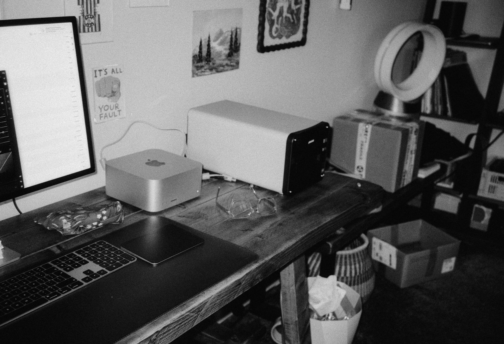

TL;DR
Discover flexible inventory-free side hustles like freelancing and consulting. You can realistically start earning $1,000 within 30 days. Focus on setting specific goals and avoiding hidden costs for sustainable growth.
Unlocking the Potential of Inventory-Free Side Hustles
Many busy professionals believe that starting a side hustle requires significant investments in inventory and storage space. This misconception restricts the options available for those looking to earn extra income.
Fortunately, there are numerous inventory-free hustles that allow immediate engagement without the fear of financial risk tied to unsold products.
Options like freelancing, online tutoring, or consulting not only eliminate the need for inventory but also enable professionals to leverage existing skills and knowledge.
By understanding the landscape of non-inventory side hustles, you can navigate the market with confidence and explore avenues that fit your lifestyle without the burden of managing stock.
Why Inventory-Dependent Hustles Are Not Ideal for Everyone
### Why Inventory-Dependent Hustles Are Not Ideal for Everyone
For many busy professionals, managing inventory can feel like a weighty burden. Not only can storage issues create logistical headaches, but they can also pose substantial financial risks.
For example, consider a scenario where someone invests $1,000 in inventory for a handmade jewelry side hustle. If, after months of effort, they only manage to sell $400 worth, they contend with an unsold stock worth $600.
This loss can be painful, impacting budgets for other essentials like bills or family outings.
Moreover, dealing with unsold items can occupy valuable physical space in a home, contributing to clutter and stress. Imagine a full-time teacher who spends weekends handcrafting products only to find their garage overflowing with unsold items after three months.
It’s not just about the money; it’s the emotional weight of unmet expectations.
Additionally, many individuals simply do not have the time or energy to chase after sales once the initial excitement wears off. A part-time graphic designer might start off enthusiastically promoting custom T-shirts but gradually lose steam as family commitments and other responsibilities take priority.
Weekly social media marketing efforts might dwindle from five posts to just one or two, meaning sales diminish further.
Even the time investment itself can be significant. A clothing reseller might spend hours sourcing inventory at thrift stores, only to find that managing online listings for each piece is a full-time job in itself.
The immediate thrill of an inventory-dependent hustle can quickly morph into a time-consuming secondary job. In contrast, side hustles that do not require inventory allow for flexibility and are often easier to manage alongside other obligations, making them ideal for those looking to earn extra income without the baggage of inventory.
Diving into Digital Services: A Proven Solution

Digital services are a prime area for professionals seeking inventory-free side hustles. Platforms like Upwork, Fiverr, and Freelancer offer seamless entry into freelancing opportunities ranging from writing and graphic design to consulting and digital marketing.
For example, a graphic designer can create logos and branding materials without needing to purchase any physical products. Not only does this save time, but it also allows one to quickly build a portfolio and clientele.
The initial step involves setting up profiles on these platforms and outlining services with competitive pricing. The ability to secure projects and deliver services from anywhere, without inventory, makes this a highly attractive option.
Transitioning from a side hustle to a primary income source could happen within just 30 days if dedication and strategic networking are applied.
Real Impact: Earning from Freelance Writing in 30 Days
Let’s consider the journey of a freelance writer who starts from scratch. After identifying niches like technology and wellness, they dedicate the first week to building a portfolio.
In the second week, they apply for gigs and land their first project—a $250 article for a wellness blog. By the end of the month, after securing three additional pieces, the total earning amounts to $1,000.
This is realistic: with focused effort, freelancers can undeniably generate substantial income without needing to manage any inventory. However, a common mistake beginners make is underpricing their services, often driven by the desire to attract clients.
They neglect to factor in their skills and market value, which can hinder long-term profitability.
Hidden Costs: Things to Avoid When Starting a Side Hustle
As exhilarating as starting a side hustle can be, many overlook hidden costs that can accumulate quickly. For instance, neglecting to maintain written contracts can lead to scope creep in projects, resulting in unpaid work or wasted resources.
Additionally, marketing overspending on tools and services that don't yield returns can diminish the initial investment. Many beginners fall into the trap of using too many platforms or tools without tracking their effectiveness.
This can dilute their efforts and lead to inefficiencies. Therefore, keeping a close eye on expenses and regularly assessing strategies is crucial for long-term sustainability while navigating your journey may require patience.
Next Steps: Expanding Your Inventory-Free Hustle
To elevate your inventory-free side hustle, first, set specific goals. Consider what you'd like to achieve within 30, 60, or even 90 days. This might involve targeting new clients, diversifying your service offerings, or increasing your monthly earnings by a certain percentage.
After establishing clear objectives, explore new markets where your skills are in demand. Engaging in social media marketing or networking events can further expand your reach.
Evaluation should be continuous—reassess your strategies and outcomes every month to optimize performance. Ready to take the next step? By implementing focused actions based on well-defined targets, you can significantly enhance not just your income but also your professional satisfaction.
FAQ
What are some popular side hustles that don't require inventory?
Freelancing, digital consulting, online tutoring, and graphic design are popular inventory-free side hustles.
How can I effectively market my inventory-free side hustle?
Utilize social media and freelance platforms to showcase your work and attract clients.
How much can I realistically earn from freelancing?
With dedication, freelancers can earn over $1,000 in their first month, depending on the niche.
Are there hidden costs associated with side hustles?
Yes, marketing overspending and neglected contracts can lead to unexpected costs.
Can I grow my side hustle into a full-time income?
With consistent effort and strategic market engagement, many successfully transition to full-time entrepreneurship.
This article is thoroughly reviewed for practical usefulness and is updated regularly to reflect current trends and opportunities.
Next step
Use the article as a decision point, not just reading material. Your next system matters more than more browsing.
Search more articles
Find related tools, workflows, and guides.
Photo credits
- Photo 1: Annie Spratt via Unsplash
- Photo 2: Tigran Hambardzumyan via Unsplash
- Photo 3: Annie Spratt via Unsplash
- Photo 4: Zan Lazarevic via Unsplash
- Photo 5: Nubelson Fernandes via Unsplash